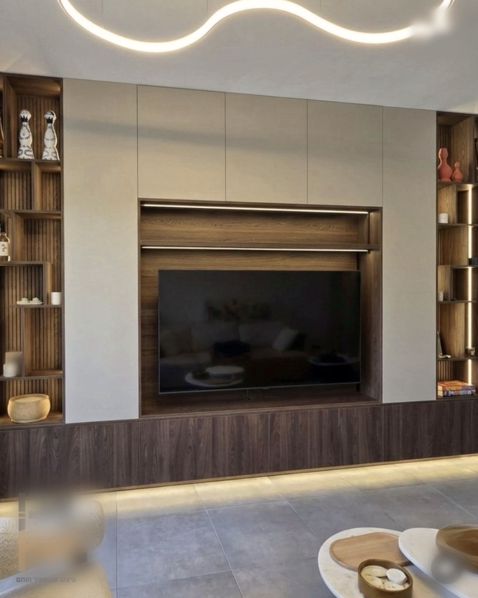
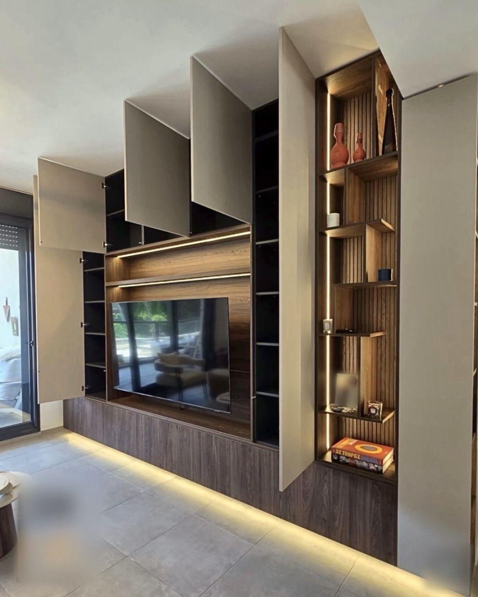
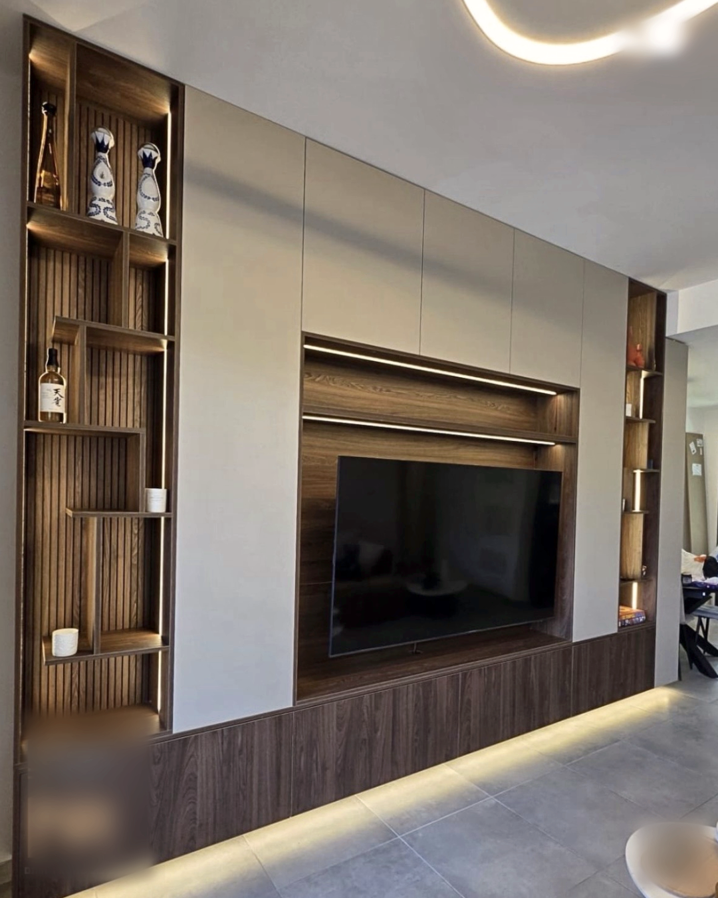

עץ חם לטלוויזיה.
חזיתות שקטות מסביב.
קיר טלוויזיה בלאטה מט ואגוז מוסקט

מאחורי החזיתות,
עוד קיר של אחסון.
פתרונות אחסון נסתרים

אור בין המדפים.
ואור מתחת לבסיס.
קיר טלוויזיה בהתאמה אישית
לתכנון קיר משלכם
דברו איתנו בוואטסאפ